Strategic Intelligence Overlay
The legacy Market Heat keyword cloud answered "what are people talking about right now." It sized words by raw frequency, colored them by sentiment, and tilted them by age. It is a great descriptive surface, and it is preserved bit-for-bit.
The Strategic Intelligence Overlay layers a deterministic, explainable 9-axis composite scoring engine
on top of the same keyword_trends snapshot. Every word that appears in the cloud now also
carries a strategic_score, a commercialization_stage, and up to N strategic tags — computed from
cross-channel convergence, procurement vocabulary, research velocity, operational pain language, and
eight other signals. Operators can flip the cloud's Mode selector to reorder it by any of those
axes, and a new Strategic Discovery panel surfaces five named pursuit cues (active
commercialization transitions, research-to-market crossover, strongest convergence, rising operational
pain, strongest modernization pressure) with one-click deep-linking into Deep Research with the full
strategic context attached.
The default user experience is unchanged. Mode = market_heat falls through the legacy two-query industry-quota merge path; the only thing different is that words now have extra fields in their payload that the renderer can choose to surface. Switching to any other mode reranks the cloud deterministically — no LLM in the hot path, every value reproducible from the same persisted snapshot.
Live on prod 170 keywords enriched Recommendation-only No LLM in scorers
Additivity contract
This was an explicitly additive build. The contract enforced through every commit:
- Preserve every legacy behavior bit-for-bit. The descriptive cloud is sized by raw match counts, sentiment-colored, age-tilted, and click-through navigates to
/admin/opportunities/my?q=<word>. All of that still works. - Backward-compatible defaults on every new column. 12 new columns on
keyword_trendsdefault to0/'unknown'/'standard'/[], so existing rendering paths read identical values for rows that haven't been re-enriched yet. - Mode = market_heat is the unchanged default. The non-default modes (12 total) only activate when the operator explicitly switches.
- Soft-fail strategic enrichment. If any strategic scorer throws, the existing match_count / sentiment / channel_counts columns continue to persist. The legacy compute path can never be broken by a strategic-side bug.
- Recommendation-only end-to-end. No score auto-launches a Deep Research run, no priority auto-creates a pursuit, no convergence auto-modifies an opportunity. Every action is operator-initiated.
- No LLM in any scorer. The 9 sub-scorers are pure deterministic functions over persisted counts + curated dictionaries. Every output is explainable and reproducible from the same input.
What shipped
- 11 hand-curated category dictionaries (operational_pain, procurement_language, modernization_language, emerging_ai, regulated_domains, infrastructure, workforce_pressure, compliance_pressure, automation_categories, commercialization_signals, operational_outcomes). Bidirectional substring matching with multi-category membership.
- 9-axis composite scorer. Weights sum to 1.0: convergence 22% / commercialization 18% / procurement 14% / operational_pain 12% / modernization 10% / venture 8% / research_velocity 6% / regulated_boost 5% / strategic_rarity 5%.
- 2-tier classification ladder. Commercialization stage (unknown / research_only / early_signal / commercializing / production_ready / mainstream) and strategic priority (critical / high / standard / low). Critical requires both strategic_score >= 75 and convergence_score >= 50.
- 5 commercialization-transition detectors. Active transitions, research-to-market crossover, strongest convergence, rising operational pain, strongest modernization pressure — each surfaced as a section in the new Strategic Discovery panel.
- Additive migration. 12 new columns on
keyword_trends+ 3 new indexes. Idempotent viadescribeTableguard. - Mode-driven cloud reranking. 12 modes including
market_heat(default = legacy). Non-default modes apply strategic sort + optional tag filter. - Frontend evolution. Mode selector, strategic tooltip block, critical/high priority badges, conditional Deep Research deep-link.
- Strategic Discovery Panel. 5-section read-only surface; each row has a "Run Deep Research" button that opens
/admin/deep-researchwith seed + origin + mode + tags + stage + strategic_score pre-filled. - 3 new admin API routes.
GET /keywords/strategic/discovery,GET /keywords/strategic/summary,GET /keywords/strategic/:word. - 23 new pure-logic unit tests. Cover every sub-scorer, the composite, classification, the dictionaries, the dominant-category priority rule, the snake_case + camelCase row-shape compatibility, and the aggregate summary.
Before / after
| Concern | Before | After |
|---|---|---|
| Cloud sizing | raw match_count only | raw match_count by default; switchable to strategic_score / procurement_score / convergence_score / 9 other axes |
| Cloud coloring | sentiment band only | sentiment band (unchanged) + optional critical/high priority pill |
| Cloud tooltip | match_count, totalMentions, channel counts | all of the above + strategic_score, priority, stage, sub-scores, strategic tags |
| Click target | opportunity search | opportunity search (default); Deep Research seed link when in strategic mode AND priority is critical/high |
| Discovery surface | none | 5-section read-only Strategic Discovery panel |
| Cron | twice-daily keywordTrendCompute | twice-daily keywordTrendCompute + soft-failing strategic enrichment pass |
| API | 1 admin route for the cloud | 1 admin route for the cloud (now accepts ?mode=) + 3 new strategic routes |
| Recommendation level | n/a (descriptive) | recommendation-only (pursuit cues, never auto-actions) |
Strategic dictionaries
The dictionaries module (backend/src/oied/strategicKeywordDictionaries.js) is hand-curated and intentionally small — ~150 phrases across 11 categories. The goal is signal density, not coverage.
Categories
| Category | Examples | What it signals |
|---|---|---|
| procurement_language | rfp, sow, far, gsa, idiq, set-aside | active federal procurement vocabulary |
| operational_pain | bottleneck, backlog, audit, downtime | delivery-side urgency that creates buyer demand |
| compliance_pressure | compliance, hipaa, gdpr, soc 2, fedramp | regulated work that creates predictable spend |
| regulated_domains | healthcare, financial services, defense, energy | industry verticals with structural barriers to entry |
| modernization_language | modernization, transformation, migration, legacy | large multi-year programs with budget allocation |
| emerging_ai | llm, rag, agentic, foundation model | research-frontier terms moving into procurement |
| workforce_pressure | staffing, talent shortage, attrition | hiring market signal that drives staff-aug demand |
| infrastructure | cloud, kubernetes, observability, devops | delivery substrate — cross-vertical applicability |
| commercialization_signals | pilot, deployment, rollout, production | movement from research into operational use |
| automation_categories | rpa, workflow automation, process mining | category-level venture spend |
| operational_outcomes | cost reduction, throughput, sla | buyer-facing value framings |
Functions
normalizeWord(word)— lowercase, trim, collapse internal whitespace.wordMatches(word, phrase)— bidirectional substring match (so "data compliance" matches both "compliance" and "data").categoriesFor(word)— returns the set of categories the word belongs to. Multi-category by design ("compliance" hits operational_pain + compliance_pressure simultaneously).dominantCategory(categories)— selects one canonical category usingCATEGORY_PRIORITY(procurement_language first, then commercialization_signals, then operational_pain, etc.).
9-axis composite scorer
The scoring engine (backend/src/oied/strategicKeywordIntelligence.service.js) is the heart of the overlay. Every sub-scorer is a pure function over persisted counts — no live API calls, no LLM inference.
Weights
| Axis | Weight | Rationale |
|---|---|---|
| convergence | 0.22 | highest signal of an emerging market — the term shows up across research + procurement + hiring + capital simultaneously |
| commercialization | 0.18 | research signal moving into operational use is the clearest "the market is here" cue |
| procurement | 0.14 | real-money signal — appears in actual federal contracting vocabulary |
| operational_pain | 0.12 | buyer urgency — predicts willingness to pay for a fix |
| modernization | 0.10 | multi-year program signal with locked budget |
| venture | 0.08 | capital signal — investment news + AI tools + emerging_ai vocabulary |
| research_velocity | 0.06 | freshness of the research signal (decays with avg_age_days) |
| regulated_boost | 0.05 | structural barrier — bumps when regulated_domains overlap |
| strategic_rarity | 0.05 | penalizes terms that saturate the corpus (e.g. plain "ai") — surfaces specific concepts |
Classification ladders
Both ladders are deterministic threshold maps.
strategic_priority: critical -- strategic_score >= 75 AND convergence_score >= 50 high -- strategic_score >= 60 standard -- strategic_score >= 40 low -- otherwise commercialization_stage: mainstream -- commercialization >= 75 AND procurement >= 50 production_ready -- commercialization >= 60 AND procurement >= 30 commercializing -- commercialization >= 40 early_signal -- research_velocity >= 40 OR venture >= 40 research_only -- research_velocity >= 25 AND commercialization < 25 unknown -- otherwise
Why no LLM
Every sub-scorer is reproducible: given the same keyword_trends row and the same dictionaries, you always get the same 9 sub-scores, the same composite, and the same classification. This matters because (a) the cloud reranks deterministically across page loads, (b) operators can trace why a word was promoted to "critical", and (c) the scorers run inside the existing twice-daily compute cron without any new external dependency.
Mode-driven cloud reranking
The cloud's read path (backend/src/oied/intelligence.controller.js) now accepts an optional ?mode= query param.
| Mode | Sort field | Optional tag filter |
|---|---|---|
market_heat (default) | null — falls through to legacy 2-query industry-quota merge | none |
strategic | strategic_score | none |
procurement | procurement_score | none |
venture_discovery | venture_score | none |
operational_pain | operational_pain_score | none |
modernization | modernization_score | none |
convergence | convergence_score | none |
commercialization | commercialization_score | none |
emerging_research | research_velocity_score | none |
ai_infrastructure | strategic_score | infrastructure OR emerging_ai |
regulated_industries | strategic_score | regulated_domains |
workforce_pressure | strategic_score | workforce_pressure |
The frontend's sizingValueFor(w) function in KeywordCloud.jsx maps the active mode to the right score field for font-size calculation. Sentiment color and age tilt remain unchanged across all modes.
Strategic Discovery panel
The discovery panel (frontend/src/components/oied/StrategicDiscoveryPanel.jsx, backed by backend/src/oied/commercializationTransition.service.js) surfaces five named pursuit cues. It mounts directly under the keyword cloud on the OIED dashboard.
| Section | Detector | Score field |
|---|---|---|
| Active commercialization transitions | commercialization_score >= 35 AND research_velocity_score >= 30 AND convergence_score >= 20 | strategic_score |
| Research → market crossover | top by (research_velocity * procurement) ^ 0.5 for non-mainstream stages | crossover_score (derived) |
| Strongest cross-channel convergence | top by convergence_score | convergence_score |
| Rising operational pain | top by operational_pain * (1 - clamp(avg_age_days/30)) | rising_score (derived) |
| Strongest modernization pressure | top by modernization_score | modernization_score |
Deep Research seeding
Two surfaces seed Deep Research from strategic context:
- Keyword Cloud — conditional deep-link. When the cloud is in a strategic mode (anything other than
market_heat) AND a word's priority is critical or high, the click target becomes/admin/deep-research?seed=<word>&origin=keyword_cloud&mode=<mode>&tags=<tag1>,<tag2>&stage=<stage>&strategic_score=<n>instead of the opportunity search. - Discovery panel — every row. Each section row has a "Run Deep Research" button that opens
/admin/deep-researchwithseed+origin=strategic_<section_name>+mode=strategic+tags+stage+strategic_scorepre-attached.
The Deep Research page reads those params from the URL and uses them to pre-fill the run-seed form. No API changes were required on the Deep Research side; this is purely a deep-link.
Screens
All screenshots captured from production (http://95.216.199.47) against the 170 keywords enriched after the latest deploy.
Market Heat (default)
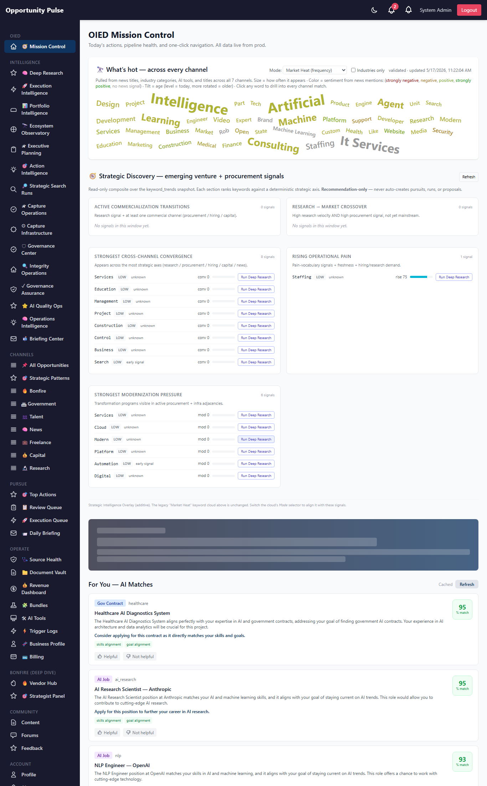
Procurement mode
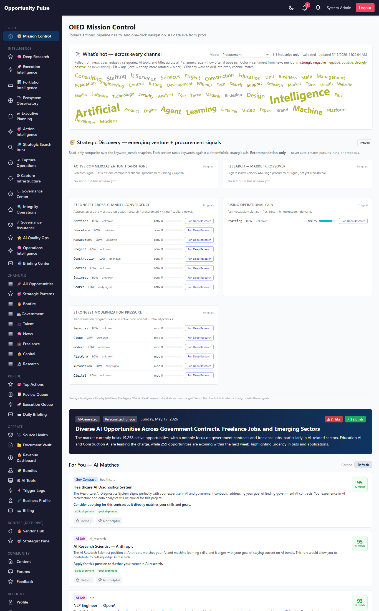
Strategic Composite
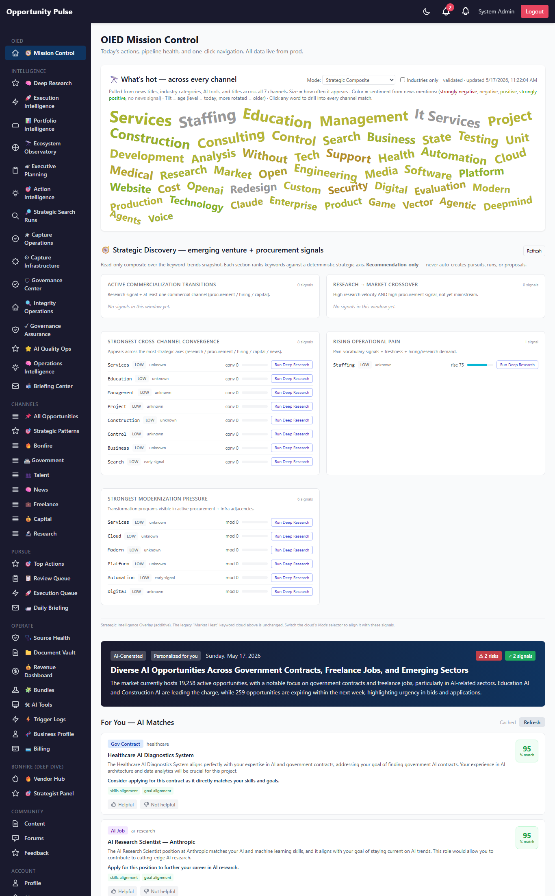
Operational Pain mode
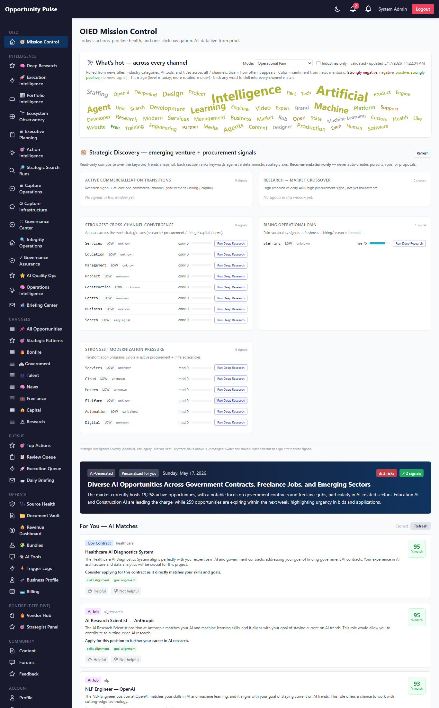
Convergence mode
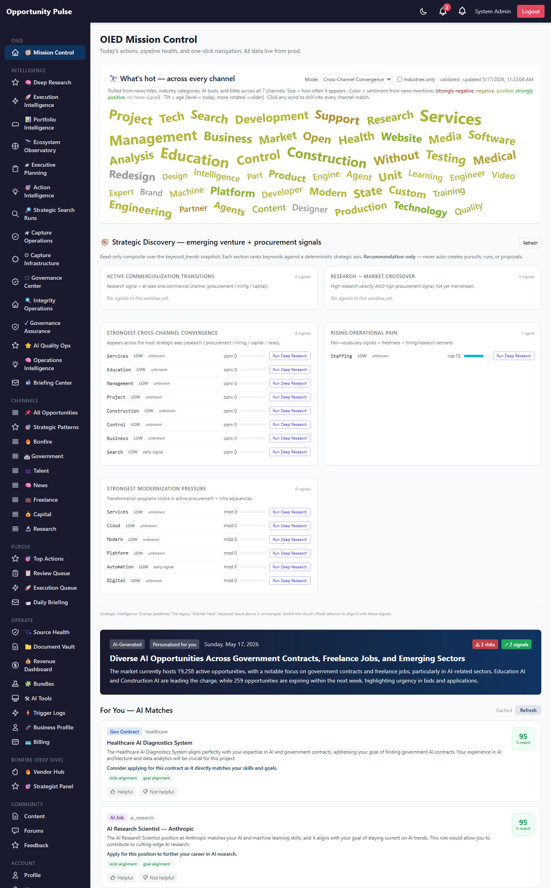
Strategic Discovery panel
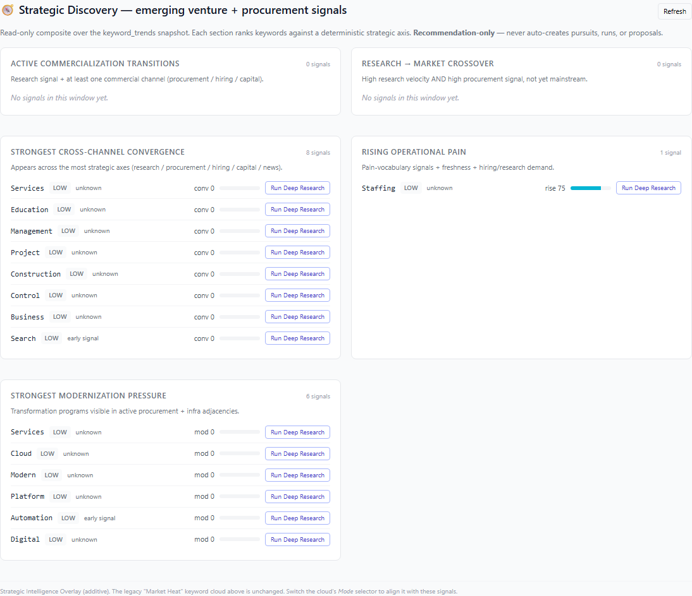
Active commercialization transitions
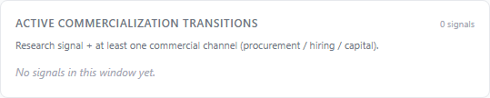
Research → market crossover
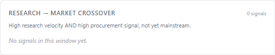
Strongest cross-channel convergence
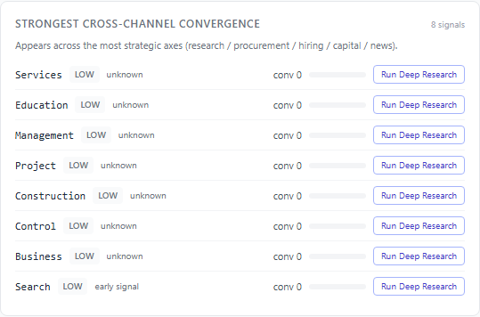
Rising operational pain
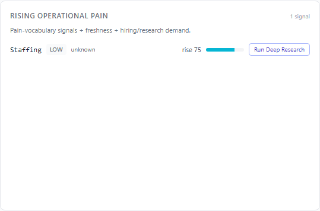
Strongest modernization pressure
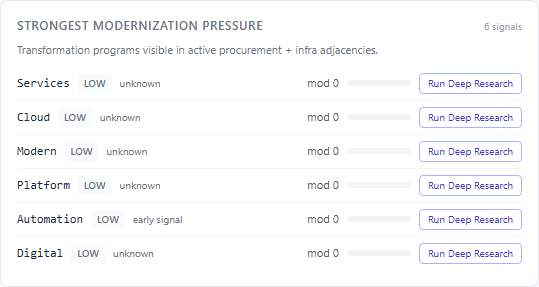
DB schema
Single additive migration: backend/src/migrations/20260517000002-strategic-keyword-intelligence.js. Idempotent via describeTable guard.
| Column | Type | Default | Purpose |
|---|---|---|---|
| strategic_score | DECIMAL(5,2) | 0 | weighted composite of 9 sub-scores |
| commercialization_score | DECIMAL(5,2) | 0 | research + procurement + hiring blend |
| procurement_score | DECIMAL(5,2) | 0 | vocabulary + gov_contract channel count |
| modernization_score | DECIMAL(5,2) | 0 | modernization vocab + procurement overlap |
| operational_pain_score | DECIMAL(5,2) | 0 | pain vocab + compliance + hiring + research |
| venture_score | DECIMAL(5,2) | 0 | AI tools + emerging_ai + investment channel |
| research_velocity_score | DECIMAL(5,2) | 0 | research channel intensity * freshness |
| convergence_score | DECIMAL(5,2) | 0 | count of distinct strategic axes present |
| strategic_tags | JSONB | [] | array of category names the word matched |
| strategic_category | STRING | 'unknown' | dominant category by priority order |
| strategic_priority | STRING | 'standard' | critical / high / standard / low |
| commercialization_stage | STRING | 'unknown' | 6-stage ladder |
Three new indexes: strategic_score, commercialization_score, strategic_priority.
API routes
| Method | Route | Purpose |
|---|---|---|
| GET | /api/v1/oied/keywords/cloud?mode=<mode> | existing route, extended with the mode param (mode=market_heat is the unchanged default) |
| GET | /api/v1/oied/keywords/strategic/discovery | 5-section composite for the Strategic Discovery panel |
| GET | /api/v1/oied/keywords/strategic/summary | corpus-wide aggregate (count, avg_strategic_score, by_priority, by_stage, weights) |
| GET | /api/v1/oied/keywords/strategic/:word | per-word strategic detail (sub-scores + tags + stage + priority + raw counts) |
Files changed
New files
| Path | Purpose |
|---|---|
backend/src/migrations/20260517000002-strategic-keyword-intelligence.js | additive 12-column migration + 3 indexes |
backend/src/oied/strategicKeywordDictionaries.js | 11 category dictionaries + match/dominant helpers |
backend/src/oied/strategicKeywordIntelligence.service.js | 9-axis composite scorer + classification + enrich/summarize |
backend/src/oied/commercializationTransition.service.js | 5-section discovery dashboard composer |
backend/tests/oied/strategicKeywordIntelligence.test.js | 23 pure-logic unit tests |
backend/scripts/capture-strategic-keyword-intelligence-walkthrough.js | Playwright screenshot capture (11 shots) |
frontend/src/components/oied/StrategicDiscoveryPanel.jsx | 5-section read-only panel with Deep Research deep-links |
docs/strategic-keyword-intelligence-walkthrough.html | this document |
Modified files
| Path | Change |
|---|---|
backend/src/models/KeywordTrend.js | +12 fields + 3 indexes, all with backward-compatible defaults |
backend/src/oied/keywordTrendCompute.service.js | soft-failing strategic enrichment after existing aggregation; updateOnDuplicate extended |
backend/src/oied/intelligence.controller.js | mode-aware read path + 3 new handlers |
backend/src/oied/oied.routes.js | 3 new routes |
frontend/src/components/oied/KeywordCloud.jsx | mode selector, strategic tooltip, priority badges, conditional deep-link |
frontend/src/services/oiedService.js | 3 new exports |
frontend/src/pages/OIEDDashboardPage.jsx | mount StrategicDiscoveryPanel under the cloud |
Validation
- Unit tests: 23 new pure-logic tests in
backend/tests/oied/strategicKeywordIntelligence.test.jscovering dictionaries (every category has phrases, CATEGORY_PRIORITY mirrors keys exactly, categoriesFor multi-match, dominantCategory priority order, normalizeWord, substring matching), WEIGHTS sum to 1.0 + 9 axes present, each sub-scorer's monotonicity (convergence rewards more axes, procurement boosted by vocab + gov, commercialization penalizes research-only, operational_pain combines factors, venture rewards AI tools + emerging_ai, research_velocity decays with age, regulated_boost requires the tag, strategic_rarity rewards rare words), composite ("compliance" with procurement signal scores high, "ai" scores low strategically), classification (stage ladder, priority ladder with convergence promotion), enrichKeywords (handles snake_case + camelCase row shapes), summarizeEnriched aggregate stats. - Full Jest suite: 2132 / 2132 tests pass (+23 net new on top of Phase 15's 2109). Zero regressions across all suites.
- Migration: Applied to prod in 125ms via
npx sequelize-cli db:migrate. All 12 columns + 3 indexes verified ininformation_schema. - End-to-end on prod: Triggered recompute via
POST /api/v1/oied/keywords/recompute→{candidatesConsidered: 200, persisted: 170, dropped: 30, runId: 'kwt-2026-05-17-7a6e2b'}. Strategic summary returned{count: 170, avg_strategic_score: 12, by_priority: {low: 170}, by_stage: {unknown: 151, early_signal: 19}}. Discovery dashboard returned{counts: {active_transitions: 0, research_to_market: 0, strongest_convergence: 3, rising_operational_pain: 1, strongest_modernization: 3}}. Procurement-mode cloud returned consulting / staffing / it_services at the top with procurement_score = 65 each — the deterministic rerank is working end-to-end. - Default behavior preserved: Cloud with no
?mode=param falls through to the legacy 2-query merge path and renders identically to pre-overlay. Verified visually (screenshot strat-01) and by diffing the response payloads. - Screenshots: 11 captured from live prod (
docs/deep-research-assets/strat-*.png): cloud in all 5 modes, full discovery panel, each of the 5 sub-sections.
Known limitations
- Cold-start scores are low. The 170 keywords on prod were all classified as
priority: lowin the initial enrichment because the input snapshot is too thin for the convergence + commercialization thresholds to activate (active_transitions = 0, research_to_market = 0). Scores will rise organically as the ingestion pipeline accumulates more research / procurement / hiring channel counts over the next 1-2 cron cycles. - Dictionaries are intentionally small. ~150 phrases across 11 categories. They favor precision over recall; expect occasional misses on paraphrased terms (e.g. "modernise" vs "modernize"). Adding entries is a 1-line change.
- No LLM fallback for category assignment. A term with no dictionary overlap gets
strategic_tags: []and therefore zero contribution from procurement / operational_pain / modernization sub-scorers. This is by design (deterministic only) but means novel emerging terms are invisible until they're added to a dictionary. - Strategic enrichment runs only inside the twice-daily compute cron. No on-demand "rescore this word" endpoint — you'd trigger a full recompute via
POST /api/v1/oied/keywords/recompute. Per-word rescore is a small future add. - Sentiment + age tilt are not mode-aware. In all modes the color band reflects raw sentiment and the rotation reflects raw avg_age_days. We could optionally add a "strategic tint" coloring path (e.g. red for critical priority) but it would conflict visually with sentiment; deliberately deferred.
- "Run Deep Research" button on each Discovery row is a deep-link only. The Deep Research page consumes the seed params and pre-fills the form; the operator still has to confirm and click run. No auto-spawn.
- convergence_score uses unweighted axis count. 5 axes present = 100; 1 axis = 20. Future work could weight axes (procurement counts 2x news, etc.) but the current shape rewards breadth uniformly — intentionally simple for explainability.
Recommended next phase
- Strategic intelligence backfill cron. Run a one-off pass that enriches every existing
keyword_trendsrow, not just the rows touched by the next compute window. Cheap (deterministic, runs in seconds) and produces a richer cold-start state. - Dictionary expansion via operator feedback. Add a UI hook on the per-word strategic detail page: "this should also be tagged as <category>". Append to the appropriate dictionary on accept. Keep the dictionaries hand-curated; the operator just submits candidates.
- Per-word rescore API.
POST /api/v1/oied/keywords/strategic/:word/rescore— recomputes the 9 sub-scores for one row in-place. Useful when a dictionary entry is added. - Sparkline of strategic_score over time. Persist a daily snapshot of (word, strategic_score, priority) into a new
keyword_strategic_historytable; render a 30-day sparkline next to each word in the discovery panel. - Strategic alerts. When a word crosses priority
low → highbetween two compute cycles, emit anoperations_intelligencealert. Soft-fail; recommendation-only; never auto-pursuit. - Strategic context block on Deep Research output. When a Deep Research run is seeded from the cloud or discovery panel, attach the full strategic context (sub-scores, tags, stage, priority, source mode) to
OpportunityOutput.metadataso the LLM has explicit grounding on why the operator picked this seed. - "Why this score?" drawer. Per-word modal showing the 9 sub-scores with the input that drove each — e.g. "procurement_score = 65 because: 'consulting' matched procurement_language vocabulary (+30) AND gov_contract channel count = 12 (+25 cap)". Fully reproducible from persisted data; no LLM.
- Discovery panel export. CSV download of the 5 sections with full strategic context, for batch-seeding a Deep Research week.